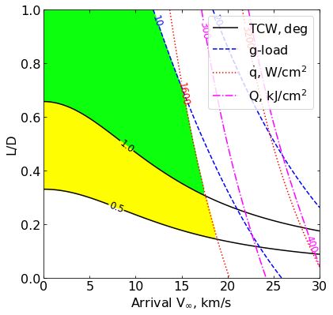
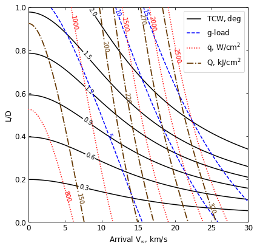

07 - a - Saturn - Feasibility Charts - Lift¶
[1]:
from AMAT.planet import Planet
from AMAT.vehicle import Vehicle
import numpy as np
from scipy import interpolate
import matplotlib.pyplot as plt
from matplotlib import rcParams
from matplotlib.patches import Polygon
import os
[2]:
# Set up the planet and atmosphere model.
planet=Planet("SATURN")
planet.h_skip = 1000e3
planet.h_low = 50e3
planet.loadAtmosphereModel('../atmdata/Saturn/saturn-nominal.dat', 0 , 1 , 2, 3, heightInKmFlag=True)
[9]:
vinf_kms_array = np.linspace( 0.0, 30.0, 11)
LD_array = np.linspace( 0.0, 1.0 , 11)
[4]:
os.makedirs('../data/jsr-paper/saturn/')
[10]:
runID = 'saturn-lift-'
num_total = len(vinf_kms_array)*len(LD_array)
count = 1
v0_kms_array = np.zeros(len(vinf_kms_array))
v0_kms_array[:] = np.sqrt(1.0*(vinf_kms_array[:]*1E3)**2.0 +\
2*np.ones(len(vinf_kms_array))*\
planet.GM/(planet.RP+1000.0*1.0E3))/1.0E3
overShootLimit_array = np.zeros((len(v0_kms_array),len(LD_array)))
underShootLimit_array = np.zeros((len(v0_kms_array),len(LD_array)))
exitflag_os_array = np.zeros((len(v0_kms_array),len(LD_array)))
exitflag_us_array = np.zeros((len(v0_kms_array),len(LD_array)))
TCW_array = np.zeros((len(v0_kms_array),len(LD_array)))
[11]:
for i in range(0,len(v0_kms_array)):
for j in range(0,len(LD_array)):
vehicle=Vehicle('Apollo', 1000.0, 200.0, LD_array[j], 3.1416, 0.0, 1.00, planet)
vehicle.setInitialState(1000.0,0.0,0.0,v0_kms_array[i],0.0,-4.5,0.0,0.0)
vehicle.setSolverParams(1E-5)
overShootLimit_array[i,j], exitflag_os_array[i,j] = vehicle.findOverShootLimit (2400.0, 1.0, -30.0, -4.0, 1E-10, 265.0e3)
underShootLimit_array[i,j], exitflag_us_array[i,j] = vehicle.findUnderShootLimit(2400.0, 1.0, -30.0, -4.0, 1E-10, 265.0e3)
TCW_array[i,j] = overShootLimit_array[i,j] - underShootLimit_array[i,j]
print("Run #"+str(count)+" of "+ str(num_total)+": Arrival V_infty: "+str(vinf_kms_array[i])+" km/s"+", L/D:"+str(LD_array[j]) + " OSL: "+str(overShootLimit_array[i,j])+" USL: "+str(underShootLimit_array[i,j])+", TCW: "+str(TCW_array[i,j])+" EFOS: "+str(exitflag_os_array[i,j])+ " EFUS: "+str(exitflag_us_array[i,j]))
count = count +1
np.savetxt('../data/jsr-paper/saturn/'+runID+'vinf_kms_array.txt',vinf_kms_array)
np.savetxt('../data/jsr-paper/saturn/'+runID+'v0_kms_array.txt',v0_kms_array)
np.savetxt('../data/jsr-paper/saturn/'+runID+'LD_array.txt',LD_array)
np.savetxt('../data/jsr-paper/saturn/'+runID+'overShootLimit_array.txt',overShootLimit_array)
np.savetxt('../data/jsr-paper/saturn/'+runID+'exitflag_os_array.txt',exitflag_os_array)
np.savetxt('../data/jsr-paper/saturn/'+runID+'undershootLimit_array.txt',underShootLimit_array)
np.savetxt('../data/jsr-paper/saturn/'+runID+'exitflag_us_array.txt',exitflag_us_array)
np.savetxt('../data/jsr-paper/saturn/'+runID+'TCW_array.txt',TCW_array)
Run #1 of 121: Arrival V_infty: 0.0 km/s, L/D:0.0 OSL: -6.886633370348136 USL: -6.886633370348136, TCW: 0.0 EFOS: 1.0 EFUS: 1.0
Run #2 of 121: Arrival V_infty: 0.0 km/s, L/D:0.1 OSL: -6.812789838899334 USL: -6.963913786225021, TCW: 0.15112394732568646 EFOS: 1.0 EFUS: 1.0
Run #3 of 121: Arrival V_infty: 0.0 km/s, L/D:0.2 OSL: -6.742585244574002 USL: -7.04459664553724, TCW: 0.302011400963238 EFOS: 1.0 EFUS: 1.0
Run #4 of 121: Arrival V_infty: 0.0 km/s, L/D:0.30000000000000004 OSL: -6.675457459838071 USL: -7.12883265929122, TCW: 0.4533751994531485 EFOS: 1.0 EFUS: 1.0
Run #5 of 121: Arrival V_infty: 0.0 km/s, L/D:0.4 OSL: -6.611828796463669 USL: -7.217168788585695, TCW: 0.6053399921220262 EFOS: 1.0 EFUS: 1.0
Run #6 of 121: Arrival V_infty: 0.0 km/s, L/D:0.5 OSL: -6.550989555173146 USL: -7.309051262025605, TCW: 0.7580617068524589 EFOS: 1.0 EFUS: 1.0
Run #7 of 121: Arrival V_infty: 0.0 km/s, L/D:0.6000000000000001 OSL: -6.493338031134044 USL: -7.404754286355455, TCW: 0.9114162552214111 EFOS: 1.0 EFUS: 1.0
Run #8 of 121: Arrival V_infty: 0.0 km/s, L/D:0.7000000000000001 OSL: -6.438529653620208 USL: -7.504151147593802, TCW: 1.0656214939735946 EFOS: 1.0 EFUS: 1.0
Run #9 of 121: Arrival V_infty: 0.0 km/s, L/D:0.8 OSL: -6.3867879742974765 USL: -7.607912744395435, TCW: 1.2211247700979584 EFOS: 1.0 EFUS: 1.0
Run #10 of 121: Arrival V_infty: 0.0 km/s, L/D:0.9 OSL: -6.337413021828979 USL: -7.7145099305635085, TCW: 1.3770969087345293 EFOS: 1.0 EFUS: 1.0
Run #11 of 121: Arrival V_infty: 0.0 km/s, L/D:1.0 OSL: -6.290216401568614 USL: -7.825007734383689, TCW: 1.5347913328150753 EFOS: 1.0 EFUS: 1.0
Run #12 of 121: Arrival V_infty: 3.0 km/s, L/D:0.0 OSL: -6.9121480614485336 USL: -6.9121480614485336, TCW: 0.0 EFOS: 1.0 EFUS: 1.0
Run #13 of 121: Arrival V_infty: 3.0 km/s, L/D:0.1 OSL: -6.835533962788759 USL: -6.992328298663779, TCW: 0.1567943358750199 EFOS: 1.0 EFUS: 1.0
Run #14 of 121: Arrival V_infty: 3.0 km/s, L/D:0.2 OSL: -6.762932969148096 USL: -7.0764640870838775, TCW: 0.31353111793578137 EFOS: 1.0 EFUS: 1.0
Run #15 of 121: Arrival V_infty: 3.0 km/s, L/D:0.30000000000000004 OSL: -6.693751942591916 USL: -7.164462487351557, TCW: 0.47071054475964047 EFOS: 1.0 EFUS: 1.0
Run #16 of 121: Arrival V_infty: 3.0 km/s, L/D:0.4 OSL: -6.627903297223384 USL: -7.256555036772625, TCW: 0.628651739549241 EFOS: 1.0 EFUS: 1.0
Run #17 of 121: Arrival V_infty: 3.0 km/s, L/D:0.5 OSL: -6.565366738454031 USL: -7.352694585584686, TCW: 0.7873278471306548 EFOS: 1.0 EFUS: 1.0
Run #18 of 121: Arrival V_infty: 3.0 km/s, L/D:0.6000000000000001 OSL: -6.505975812993711 USL: -7.452784655346477, TCW: 0.9468088423527661 EFOS: 1.0 EFUS: 1.0
Run #19 of 121: Arrival V_infty: 3.0 km/s, L/D:0.7000000000000001 OSL: -6.44996268403338 USL: -7.557655720927869, TCW: 1.1076930368944886 EFOS: 1.0 EFUS: 1.0
Run #20 of 121: Arrival V_infty: 3.0 km/s, L/D:0.8 OSL: -6.39716366808716 USL: -7.665991613299411, TCW: 1.2688279452122515 EFOS: 1.0 EFUS: 1.0
Run #21 of 121: Arrival V_infty: 3.0 km/s, L/D:0.9 OSL: -6.346650176332332 USL: -7.778442019975046, TCW: 1.4317918436427135 EFOS: 1.0 EFUS: 1.0
Run #22 of 121: Arrival V_infty: 3.0 km/s, L/D:1.0 OSL: -6.298603773349896 USL: -7.895525033680315, TCW: 1.5969212603304186 EFOS: 1.0 EFUS: 1.0
Run #23 of 121: Arrival V_infty: 6.0 km/s, L/D:0.0 OSL: -6.982431004922546 USL: -6.982431004922546, TCW: 0.0 EFOS: 1.0 EFUS: 1.0
Run #24 of 121: Arrival V_infty: 6.0 km/s, L/D:0.1 OSL: -6.897946180397412 USL: -7.071099745684478, TCW: 0.17315356528706616 EFOS: 1.0 EFUS: 1.0
Run #25 of 121: Arrival V_infty: 6.0 km/s, L/D:0.2 OSL: -6.818086974402831 USL: -7.165449361433275, TCW: 0.34736238703044364 EFOS: 1.0 EFUS: 1.0
Run #26 of 121: Arrival V_infty: 6.0 km/s, L/D:0.30000000000000004 OSL: -6.74252106386848 USL: -7.264360392779054, TCW: 0.5218393289105734 EFOS: 1.0 EFUS: 1.0
Run #27 of 121: Arrival V_infty: 6.0 km/s, L/D:0.4 OSL: -6.671031589947233 USL: -7.368309302146372, TCW: 0.6972777121991385 EFOS: 1.0 EFUS: 1.0
Run #28 of 121: Arrival V_infty: 6.0 km/s, L/D:0.5 OSL: -6.603618083106994 USL: -7.477187073149253, TCW: 0.8735689900422585 EFOS: 1.0 EFUS: 1.0
Run #29 of 121: Arrival V_infty: 6.0 km/s, L/D:0.6000000000000001 OSL: -6.539914128785313 USL: -7.5911404603903065, TCW: 1.051226331604994 EFOS: 1.0 EFUS: 1.0
Run #30 of 121: Arrival V_infty: 6.0 km/s, L/D:0.7000000000000001 OSL: -6.480262536868395 USL: -7.710389790576301, TCW: 1.2301272537079058 EFOS: 1.0 EFUS: 1.0
Run #31 of 121: Arrival V_infty: 6.0 km/s, L/D:0.8 OSL: -6.424121939970064 USL: -7.83497590382467, TCW: 1.4108539638546063 EFOS: 1.0 EFUS: 1.0
Run #32 of 121: Arrival V_infty: 6.0 km/s, L/D:0.9 OSL: -6.3708916536852485 USL: -7.964934391027782, TCW: 1.5940427373425337 EFOS: 1.0 EFUS: 1.0
Run #33 of 121: Arrival V_infty: 6.0 km/s, L/D:1.0 OSL: -6.320586888337857 USL: -8.099173836839327, TCW: 1.77858694850147 EFOS: 1.0 EFUS: 1.0
Run #34 of 121: Arrival V_infty: 9.0 km/s, L/D:0.0 OSL: -7.082947726317798 USL: -7.082947726317798, TCW: 0.0 EFOS: 1.0 EFUS: 1.0
Run #35 of 121: Arrival V_infty: 9.0 km/s, L/D:0.1 OSL: -6.985556005303806 USL: -7.18674304884189, TCW: 0.20118704353808425 EFOS: 1.0 EFUS: 1.0
Run #36 of 121: Arrival V_infty: 9.0 km/s, L/D:0.2 OSL: -6.894491778279189 USL: -7.296592069214967, TCW: 0.4021002909357776 EFOS: 1.0 EFUS: 1.0
Run #37 of 121: Arrival V_infty: 9.0 km/s, L/D:0.30000000000000004 OSL: -6.809242320639896 USL: -7.413449316205515, TCW: 0.6042069955656189 EFOS: 1.0 EFUS: 1.0
Run #38 of 121: Arrival V_infty: 9.0 km/s, L/D:0.4 OSL: -6.729486093514424 USL: -7.537182860374742, TCW: 0.8076967668603174 EFOS: 1.0 EFUS: 1.0
Run #39 of 121: Arrival V_infty: 9.0 km/s, L/D:0.5 OSL: -6.654877876928367 USL: -7.6678620447273715, TCW: 1.0129841677990044 EFOS: 1.0 EFUS: 1.0
Run #40 of 121: Arrival V_infty: 9.0 km/s, L/D:0.6000000000000001 OSL: -6.584988632333989 USL: -7.805761708514183, TCW: 1.220773076180194 EFOS: 1.0 EFUS: 1.0
Run #41 of 121: Arrival V_infty: 9.0 km/s, L/D:0.7000000000000001 OSL: -6.520074498097529 USL: -7.950478127815586, TCW: 1.4304036297180573 EFOS: 1.0 EFUS: 1.0
Run #42 of 121: Arrival V_infty: 9.0 km/s, L/D:0.8 OSL: -6.459260480347439 USL: -8.102634223316272, TCW: 1.6433737429688335 EFOS: 1.0 EFUS: 1.0
Run #43 of 121: Arrival V_infty: 9.0 km/s, L/D:0.9 OSL: -6.402741669953684 USL: -8.261118756032374, TCW: 1.85837708607869 EFOS: 1.0 EFUS: 1.0
Run #44 of 121: Arrival V_infty: 9.0 km/s, L/D:1.0 OSL: -6.349592404345458 USL: -8.426697869545023, TCW: 2.0771054651995655 EFOS: 1.0 EFUS: 1.0
Run #45 of 121: Arrival V_infty: 12.0 km/s, L/D:0.0 OSL: -7.198238254044554 USL: -7.198238254044554, TCW: 0.0 EFOS: 1.0 EFUS: 1.0
Run #46 of 121: Arrival V_infty: 12.0 km/s, L/D:0.1 OSL: -7.0843241517141 USL: -7.321127140996396, TCW: 0.23680298928229604 EFOS: 1.0 EFUS: 1.0
Run #47 of 121: Arrival V_infty: 12.0 km/s, L/D:0.2 OSL: -6.978834092718898 USL: -7.453777297181659, TCW: 0.47494320446276106 EFOS: 1.0 EFUS: 1.0
Run #48 of 121: Arrival V_infty: 12.0 km/s, L/D:0.30000000000000004 OSL: -6.881436742805818 USL: -7.595362056104932, TCW: 0.7139253132991144 EFOS: 1.0 EFUS: 1.0
Run #49 of 121: Arrival V_infty: 12.0 km/s, L/D:0.4 OSL: -6.791580553195672 USL: -7.747295343113365, TCW: 0.9557147899176925 EFOS: 1.0 EFUS: 1.0
Run #50 of 121: Arrival V_infty: 12.0 km/s, L/D:0.5 OSL: -6.70871813591657 USL: -7.9096753522753716, TCW: 1.2009572163588018 EFOS: 1.0 EFUS: 1.0
Run #51 of 121: Arrival V_infty: 12.0 km/s, L/D:0.6000000000000001 OSL: -6.632083110445819 USL: -8.081291848626279, TCW: 1.4492087381804595 EFOS: 1.0 EFUS: 1.0
Run #52 of 121: Arrival V_infty: 12.0 km/s, L/D:0.7000000000000001 OSL: -6.561559045498143 USL: -8.263648018553795, TCW: 1.7020889730556519 EFOS: 1.0 EFUS: 1.0
Run #53 of 121: Arrival V_infty: 12.0 km/s, L/D:0.8 OSL: -6.496271235599124 USL: -8.456097391936055, TCW: 1.9598261563369306 EFOS: 1.0 EFUS: 1.0
Run #54 of 121: Arrival V_infty: 12.0 km/s, L/D:0.9 OSL: -6.436158908691141 USL: -8.656301058857935, TCW: 2.2201421501667937 EFOS: 1.0 EFUS: 1.0
Run #55 of 121: Arrival V_infty: 12.0 km/s, L/D:1.0 OSL: -6.380192858647206 USL: -8.867227008129703, TCW: 2.487034149482497 EFOS: 1.0 EFUS: 1.0
Run #56 of 121: Arrival V_infty: 15.0 km/s, L/D:0.0 OSL: -7.317231699169497 USL: -7.317231699169497, TCW: 0.0 EFOS: 1.0 EFUS: 1.0
Run #57 of 121: Arrival V_infty: 15.0 km/s, L/D:0.1 OSL: -7.183285026861995 USL: -7.464286358801473, TCW: 0.2810013319394784 EFOS: 1.0 EFUS: 1.0
Run #58 of 121: Arrival V_infty: 15.0 km/s, L/D:0.2 OSL: -7.061326548879151 USL: -7.6252012762925006, TCW: 0.5638747274133493 EFOS: 1.0 EFUS: 1.0
Run #59 of 121: Arrival V_infty: 15.0 km/s, L/D:0.30000000000000004 OSL: -6.95061637921026 USL: -7.798918289459834, TCW: 0.8483019102495746 EFOS: 1.0 EFUS: 1.0
Run #60 of 121: Arrival V_infty: 15.0 km/s, L/D:0.4 OSL: -6.850065169244772 USL: -7.987403416023881, TCW: 1.1373382467791089 EFOS: 1.0 EFUS: 1.0
Run #61 of 121: Arrival V_infty: 15.0 km/s, L/D:0.5 OSL: -6.75879588949465 USL: -8.191059829594451, TCW: 1.4322639400998014 EFOS: 1.0 EFUS: 1.0
Run #62 of 121: Arrival V_infty: 15.0 km/s, L/D:0.6000000000000001 OSL: -6.6757108615056495 USL: -8.408050090562028, TCW: 1.7323392290563788 EFOS: 1.0 EFUS: 1.0
Run #63 of 121: Arrival V_infty: 15.0 km/s, L/D:0.7000000000000001 OSL: -6.60005213750992 USL: -8.639142428444757, TCW: 2.039090290934837 EFOS: 1.0 EFUS: 1.0
Run #64 of 121: Arrival V_infty: 15.0 km/s, L/D:0.8 OSL: -6.531024857460579 USL: -8.884375588531839, TCW: 2.3533507310712594 EFOS: 1.0 EFUS: 1.0
Run #65 of 121: Arrival V_infty: 15.0 km/s, L/D:0.9 OSL: -6.468008610456309 USL: -9.142256401908526, TCW: 2.674247791452217 EFOS: 1.0 EFUS: 1.0
Run #66 of 121: Arrival V_infty: 15.0 km/s, L/D:1.0 OSL: -6.409885181310528 USL: -9.411883289198158, TCW: 3.00199810788763 EFOS: 1.0 EFUS: 1.0
Run #67 of 121: Arrival V_infty: 18.0 km/s, L/D:0.0 OSL: -7.433154716803983 USL: -7.433154716803983, TCW: 0.0 EFOS: 1.0 EFUS: 1.0
Run #68 of 121: Arrival V_infty: 18.0 km/s, L/D:0.1 OSL: -7.276599611599522 USL: -7.607769976180862, TCW: 0.3311703645813395 EFOS: 1.0 EFUS: 1.0
Run #69 of 121: Arrival V_infty: 18.0 km/s, L/D:0.2 OSL: -7.136836691883218 USL: -7.801842017019226, TCW: 0.6650053251360077 EFOS: 1.0 EFUS: 1.0
Run #70 of 121: Arrival V_infty: 18.0 km/s, L/D:0.30000000000000004 OSL: -7.0124985070942785 USL: -8.01547183355433, TCW: 1.0029733264600509 EFOS: 1.0 EFUS: 1.0
Run #71 of 121: Arrival V_infty: 18.0 km/s, L/D:0.4 OSL: -6.9014428512818995 USL: -8.248658456832345, TCW: 1.3472156055504456 EFOS: 1.0 EFUS: 1.0
Run #72 of 121: Arrival V_infty: 18.0 km/s, L/D:0.5 OSL: -6.802487857865344 USL: -8.503058317299292, TCW: 1.7005704594339477 EFOS: 1.0 EFUS: 1.0
Run #73 of 121: Arrival V_infty: 18.0 km/s, L/D:0.6000000000000001 OSL: -6.713870867504738 USL: -8.776829406204342, TCW: 2.062958538699604 EFOS: 1.0 EFUS: 1.0
Run #74 of 121: Arrival V_infty: 18.0 km/s, L/D:0.7000000000000001 OSL: -6.634196686762152 USL: -9.068995726265712, TCW: 2.4347990395035595 EFOS: 1.0 EFUS: 1.0
Run #75 of 121: Arrival V_infty: 18.0 km/s, L/D:0.8 OSL: -6.562308323380421 USL: -9.380884395672183, TCW: 2.818576072291762 EFOS: 1.0 EFUS: 1.0
Run #76 of 121: Arrival V_infty: 18.0 km/s, L/D:0.9 OSL: -6.4972257950139465 USL: -9.708802042317984, TCW: 3.2115762473040377 EFOS: 1.0 EFUS: 1.0
Run #77 of 121: Arrival V_infty: 18.0 km/s, L/D:1.0 OSL: -6.437671886109456 USL: -10.053894459873845, TCW: 3.6162225737643894 EFOS: 1.0 EFUS: 1.0
Run #78 of 121: Arrival V_infty: 21.0 km/s, L/D:0.0 OSL: -7.5418852149596205 USL: -7.5418852149596205, TCW: 0.0 EFOS: 1.0 EFUS: 1.0
Run #79 of 121: Arrival V_infty: 21.0 km/s, L/D:0.1 OSL: -7.361190894866013 USL: -7.7474495367350755, TCW: 0.38625864186906256 EFOS: 1.0 EFUS: 1.0
Run #80 of 121: Arrival V_infty: 21.0 km/s, L/D:0.2 OSL: -7.2030759208937525 USL: -7.979234697224456, TCW: 0.7761587763307034 EFOS: 1.0 EFUS: 1.0
Run #81 of 121: Arrival V_infty: 21.0 km/s, L/D:0.30000000000000004 OSL: -7.065362585301045 USL: -8.238897897099378, TCW: 1.1735353117983323 EFOS: 1.0 EFUS: 1.0
Run #82 of 121: Arrival V_infty: 21.0 km/s, L/D:0.4 OSL: -6.944842751865508 USL: -8.525679729675176, TCW: 1.5808369778096676 EFOS: 1.0 EFUS: 1.0
Run #83 of 121: Arrival V_infty: 21.0 km/s, L/D:0.5 OSL: -6.839380665878707 USL: -8.839583730536106, TCW: 2.0002030646573985 EFOS: 1.0 EFUS: 1.0
Run #84 of 121: Arrival V_infty: 21.0 km/s, L/D:0.6000000000000001 OSL: -6.746375051516225 USL: -9.18110901163891, TCW: 2.434733960122685 EFOS: 1.0 EFUS: 1.0
Run #85 of 121: Arrival V_infty: 21.0 km/s, L/D:0.7000000000000001 OSL: -6.66375864730071 USL: -9.547716427587147, TCW: 2.883957780286437 EFOS: 1.0 EFUS: 1.0
Run #86 of 121: Arrival V_infty: 21.0 km/s, L/D:0.8 OSL: -6.590040895025595 USL: -9.939152044753428, TCW: 3.3491111497278325 EFOS: 1.0 EFUS: 1.0
Run #87 of 121: Arrival V_infty: 21.0 km/s, L/D:0.9 OSL: -6.52354975646449 USL: -10.352805243492185, TCW: 3.8292554870276945 EFOS: 1.0 EFUS: 1.0
Run #88 of 121: Arrival V_infty: 21.0 km/s, L/D:1.0 OSL: -6.463113549929403 USL: -10.787476536999748, TCW: 4.324362987070344 EFOS: 1.0 EFUS: 1.0
Run #89 of 121: Arrival V_infty: 24.0 km/s, L/D:0.0 OSL: -7.641142910251801 USL: -7.641142910251801, TCW: 0.0 EFOS: 1.0 EFUS: 1.0
Run #90 of 121: Arrival V_infty: 24.0 km/s, L/D:0.1 OSL: -7.435422099122661 USL: -7.879827789474803, TCW: 0.4444056903521414 EFOS: 1.0 EFUS: 1.0
Run #91 of 121: Arrival V_infty: 24.0 km/s, L/D:0.2 OSL: -7.259350191139674 USL: -8.154355079401284, TCW: 0.8950048882616102 EFOS: 1.0 EFUS: 1.0
Run #92 of 121: Arrival V_infty: 24.0 km/s, L/D:0.30000000000000004 OSL: -7.1090398359592655 USL: -8.465675500236102, TCW: 1.356635664276837 EFOS: 1.0 EFUS: 1.0
Run #93 of 121: Arrival V_infty: 24.0 km/s, L/D:0.4 OSL: -6.980516621166316 USL: -8.814589021072607, TCW: 1.8340723999062902 EFOS: 1.0 EFUS: 1.0
Run #94 of 121: Arrival V_infty: 24.0 km/s, L/D:0.5 OSL: -6.869854594333447 USL: -9.198650198908581, TCW: 2.3287956045751343 EFOS: 1.0 EFUS: 1.0
Run #95 of 121: Arrival V_infty: 24.0 km/s, L/D:0.6000000000000001 OSL: -6.773614204328624 USL: -9.618880185560556, TCW: 2.8452659812319325 EFOS: 1.0 EFUS: 1.0
Run #96 of 121: Arrival V_infty: 24.0 km/s, L/D:0.7000000000000001 OSL: -6.68897582313366 USL: -10.071645694653853, TCW: 3.382669871520193 EFOS: 1.0 EFUS: 1.0
Run #97 of 121: Arrival V_infty: 24.0 km/s, L/D:0.8 OSL: -6.6140063279890455 USL: -10.554397015468567, TCW: 3.940390687479521 EFOS: 1.0 EFUS: 1.0
Run #98 of 121: Arrival V_infty: 24.0 km/s, L/D:0.9 OSL: -6.546718397432414 USL: -11.064919615193503, TCW: 4.518201217761089 EFOS: 1.0 EFUS: 1.0
Run #99 of 121: Arrival V_infty: 24.0 km/s, L/D:1.0 OSL: -6.485768122583977 USL: -11.599067563627614, TCW: 5.113299441043637 EFOS: 1.0 EFUS: 1.0
Run #100 of 121: Arrival V_infty: 27.0 km/s, L/D:0.0 OSL: -7.730294278080692 USL: -7.730294278080692, TCW: 0.0 EFOS: 1.0 EFUS: 1.0
Run #101 of 121: Arrival V_infty: 27.0 km/s, L/D:0.1 OSL: -7.499225069572276 USL: -8.004159702832112, TCW: 0.5049346332598361 EFOS: 1.0 EFUS: 1.0
Run #102 of 121: Arrival V_infty: 27.0 km/s, L/D:0.2 OSL: -7.305992839952523 USL: -8.32482340689603, TCW: 1.0188305669435067 EFOS: 1.0 EFUS: 1.0
Run #103 of 121: Arrival V_infty: 27.0 km/s, L/D:0.30000000000000004 OSL: -7.144565865266486 USL: -8.694508581902483, TCW: 1.5499427166359965 EFOS: 1.0 EFUS: 1.0
Run #104 of 121: Arrival V_infty: 27.0 km/s, L/D:0.4 OSL: -7.009214873913152 USL: -9.1127034205565, TCW: 2.103488546643348 EFOS: 1.0 EFUS: 1.0
Run #105 of 121: Arrival V_infty: 27.0 km/s, L/D:0.5 OSL: -6.894585487010772 USL: -9.577568627821165, TCW: 2.682983140810393 EFOS: 1.0 EFUS: 1.0
Run #106 of 121: Arrival V_infty: 27.0 km/s, L/D:0.6000000000000001 OSL: -6.796064561451203 USL: -10.086342729176977, TCW: 3.2902781677257735 EFOS: 1.0 EFUS: 1.0
Run #107 of 121: Arrival V_infty: 27.0 km/s, L/D:0.7000000000000001 OSL: -6.710092622364755 USL: -10.63457140736864, TCW: 3.9244787850038847 EFOS: 1.0 EFUS: 1.0
Run #108 of 121: Arrival V_infty: 27.0 km/s, L/D:0.8 OSL: -6.634350020962302 USL: -11.21866971077543, TCW: 4.584319689813128 EFOS: 1.0 EFUS: 1.0
Run #109 of 121: Arrival V_infty: 27.0 km/s, L/D:0.9 OSL: -6.566575348217157 USL: -11.834503764934198, TCW: 5.267928416717041 EFOS: 1.0 EFUS: 1.0
Run #110 of 121: Arrival V_infty: 27.0 km/s, L/D:1.0 OSL: -6.505291097382724 USL: -12.479021048609866, TCW: 5.973729951227142 EFOS: 1.0 EFUS: 1.0
Run #111 of 121: Arrival V_infty: 30.0 km/s, L/D:0.0 OSL: -7.8093243590628845 USL: -7.8093243590628845, TCW: 0.0 EFOS: 1.0 EFUS: 1.0
Run #112 of 121: Arrival V_infty: 30.0 km/s, L/D:0.1 OSL: -7.553177327950834 USL: -8.120297062814643, TCW: 0.5671197348638088 EFOS: 1.0 EFUS: 1.0
Run #113 of 121: Arrival V_infty: 30.0 km/s, L/D:0.2 OSL: -7.343681289399683 USL: -8.490964959040866, TCW: 1.1472836696411832 EFOS: 1.0 EFUS: 1.0
Run #114 of 121: Arrival V_infty: 30.0 km/s, L/D:0.30000000000000004 OSL: -7.172631128494686 USL: -8.924815455677162, TCW: 1.7521843271824764 EFOS: 1.0 EFUS: 1.0
Run #115 of 121: Arrival V_infty: 30.0 km/s, L/D:0.4 OSL: -7.031803393409064 USL: -9.419318771200778, TCW: 2.387515377791715 EFOS: 1.0 EFUS: 1.0
Run #116 of 121: Arrival V_infty: 30.0 km/s, L/D:0.5 OSL: -6.914241488178959 USL: -9.972124349522346, TCW: 3.057882861343387 EFOS: 1.0 EFUS: 1.0
Run #117 of 121: Arrival V_infty: 30.0 km/s, L/D:0.6000000000000001 OSL: -6.814171822443313 USL: -10.57726046237076, TCW: 3.763088639927446 EFOS: 1.0 EFUS: 1.0
Run #118 of 121: Arrival V_infty: 30.0 km/s, L/D:0.7000000000000001 OSL: -6.727330858047935 USL: -11.229219044609636, TCW: 4.5018881865617 EFOS: 1.0 EFUS: 1.0
Run #119 of 121: Arrival V_infty: 30.0 km/s, L/D:0.8 OSL: -6.651091770057974 USL: -11.922576455130184, TCW: 5.27148468507221 EFOS: 1.0 EFUS: 1.0
Run #120 of 121: Arrival V_infty: 30.0 km/s, L/D:0.9 OSL: -6.583000757440459 USL: -12.651127214914595, TCW: 6.068126457474136 EFOS: 1.0 EFUS: 1.0
Run #121 of 121: Arrival V_infty: 30.0 km/s, L/D:1.0 OSL: -6.521492352228961 USL: -13.412382763555797, TCW: 6.890890411326836 EFOS: 1.0 EFUS: 1.0
[12]:
acc_net_g_max_array = np.zeros((len(v0_kms_array),len(LD_array)))
stag_pres_atm_max_array = np.zeros((len(v0_kms_array),len(LD_array)))
q_stag_total_max_array = np.zeros((len(v0_kms_array),len(LD_array)))
heatload_max_array = np.zeros((len(v0_kms_array),len(LD_array)))
for i in range(0,len(v0_kms_array)):
for j in range(0,len(LD_array)):
vehicle=Vehicle('Apollo', 1000.0, 200.0, LD_array[j], 3.1416, 0.0, 1.00, planet)
vehicle.setInitialState(1000.0,0.0,0.0,v0_kms_array[i],0.0,overShootLimit_array[i,j],0.0,0.0)
vehicle.setSolverParams(1E-5)
vehicle.propogateEntry (2400.0, 1.0, 180.0)
# Extract and save variables to plot
t_min_os = vehicle.t_minc
h_km_os = vehicle.h_kmc
acc_net_g_os = vehicle.acc_net_g
q_stag_con_os = vehicle.q_stag_con
q_stag_rad_os = vehicle.q_stag_rad
rc_os = vehicle.rc
vc_os = vehicle.vc
stag_pres_atm_os = vehicle.computeStagPres(rc_os,vc_os)/(1.01325E5)
heatload_os = vehicle.heatload
vehicle=Vehicle('Apollo', 1000.0, 200.0, LD_array[j], 3.1416, 0.0, 1.00, planet)
vehicle.setInitialState(1000.0,0.0,0.0,v0_kms_array[i],0.0,underShootLimit_array[i,j],0.0,0.0)
vehicle.setSolverParams(1E-5)
vehicle.propogateEntry (2400.0, 1.0, 0.0)
# Extract and save variable to plot
t_min_us = vehicle.t_minc
h_km_us = vehicle.h_kmc
acc_net_g_us = vehicle.acc_net_g
q_stag_con_us = vehicle.q_stag_con
q_stag_rad_us = vehicle.q_stag_rad
rc_us = vehicle.rc
vc_us = vehicle.vc
stag_pres_atm_us = vehicle.computeStagPres(rc_us,vc_us)/(1.01325E5)
heatload_us = vehicle.heatload
q_stag_total_os = q_stag_con_os + q_stag_rad_os
q_stag_total_us = q_stag_con_us + q_stag_rad_us
acc_net_g_max_array[i,j] = max(max(acc_net_g_os),max(acc_net_g_us))
stag_pres_atm_max_array[i,j] = max(max(stag_pres_atm_os),max(stag_pres_atm_os))
q_stag_total_max_array[i,j] = max(max(q_stag_total_os),max(q_stag_total_us))
heatload_max_array[i,j] = max(max(heatload_os),max(heatload_os))
print("V_infty: "+str(vinf_kms_array[i])+" km/s"+", L/D: "+str(LD_array[j])+" G_MAX: "+str(acc_net_g_max_array[i,j])+" QDOT_MAX: "+str(q_stag_total_max_array[i,j])+" J_MAX: "+str(heatload_max_array[i,j])+" STAG. PRES: "+str(stag_pres_atm_max_array[i,j]))
np.savetxt('../data/jsr-paper/saturn/'+runID+'acc_net_g_max_array.txt',acc_net_g_max_array)
np.savetxt('../data/jsr-paper/saturn/'+runID+'stag_pres_atm_max_array.txt',stag_pres_atm_max_array)
np.savetxt('../data/jsr-paper/saturn/'+runID+'q_stag_total_max_array.txt',q_stag_total_max_array)
np.savetxt('../data/jsr-paper/saturn/'+runID+'heatload_max_array.txt',heatload_max_array)
V_infty: 0.0 km/s, L/D: 0.0 G_MAX: 2.2380106468687773 QDOT_MAX: 717.9389837034478 J_MAX: 129976.61377323652 STAG. PRES: 0.043357923446794594
V_infty: 0.0 km/s, L/D: 0.1 G_MAX: 2.3437467372537566 QDOT_MAX: 733.0925568470867 J_MAX: 132039.22993603474 STAG. PRES: 0.041591651952814446
V_infty: 0.0 km/s, L/D: 0.2 G_MAX: 2.4769742301935027 QDOT_MAX: 748.3914702860064 J_MAX: 134138.746337036 STAG. PRES: 0.03990534181399003
V_infty: 0.0 km/s, L/D: 0.30000000000000004 G_MAX: 2.6399780740061285 QDOT_MAX: 763.9159326941137 J_MAX: 136236.36277629616 STAG. PRES: 0.038263868326281425
V_infty: 0.0 km/s, L/D: 0.4 G_MAX: 2.8364313168705975 QDOT_MAX: 779.9055271724576 J_MAX: 138419.1355258049 STAG. PRES: 0.036718853371113025
V_infty: 0.0 km/s, L/D: 0.5 G_MAX: 3.0638142163346593 QDOT_MAX: 795.8858254350162 J_MAX: 140576.76574633943 STAG. PRES: 0.03521211825583597
V_infty: 0.0 km/s, L/D: 0.6000000000000001 G_MAX: 3.3237378410004608 QDOT_MAX: 812.0432562444495 J_MAX: 142782.3308805871 STAG. PRES: 0.033776703393943966
V_infty: 0.0 km/s, L/D: 0.7000000000000001 G_MAX: 3.6157991381384136 QDOT_MAX: 828.2862494265522 J_MAX: 145018.41080045086 STAG. PRES: 0.03239350993274063
V_infty: 0.0 km/s, L/D: 0.8 G_MAX: 3.9449367686584487 QDOT_MAX: 845.0631424714177 J_MAX: 147257.38678269504 STAG. PRES: 0.03107984978209567
V_infty: 0.0 km/s, L/D: 0.9 G_MAX: 4.303031468569035 QDOT_MAX: 861.5781446777557 J_MAX: 149449.6587919304 STAG. PRES: 0.029813369432466947
V_infty: 0.0 km/s, L/D: 1.0 G_MAX: 4.694641089504148 QDOT_MAX: 878.3016363428877 J_MAX: 151736.5762479704 STAG. PRES: 0.02861147485735646
V_infty: 3.0 km/s, L/D: 0.0 G_MAX: 2.3390657357879867 QDOT_MAX: 737.5343675300886 J_MAX: 133212.43968050648 STAG. PRES: 0.0453155875780144
V_infty: 3.0 km/s, L/D: 0.1 G_MAX: 2.453443350457311 QDOT_MAX: 753.7159061453943 J_MAX: 135386.81646374456 STAG. PRES: 0.04339322456383322
V_infty: 3.0 km/s, L/D: 0.2 G_MAX: 2.5979715808489527 QDOT_MAX: 770.2347752568652 J_MAX: 137648.72282515842 STAG. PRES: 0.041567335373905
V_infty: 3.0 km/s, L/D: 0.30000000000000004 G_MAX: 2.7746406266109687 QDOT_MAX: 787.0529083115665 J_MAX: 139920.38014289347 STAG. PRES: 0.03980475764114852
V_infty: 3.0 km/s, L/D: 0.4 G_MAX: 2.9845232832782083 QDOT_MAX: 804.009939966568 J_MAX: 142197.61535090287 STAG. PRES: 0.038107582117878944
V_infty: 3.0 km/s, L/D: 0.5 G_MAX: 3.2290127529916197 QDOT_MAX: 821.2027581096564 J_MAX: 144531.23686239225 STAG. PRES: 0.036489159173281854
V_infty: 3.0 km/s, L/D: 0.6000000000000001 G_MAX: 3.507792689870363 QDOT_MAX: 838.5195437548717 J_MAX: 146849.9049566992 STAG. PRES: 0.034935188578214274
V_infty: 3.0 km/s, L/D: 0.7000000000000001 G_MAX: 3.824066214314924 QDOT_MAX: 856.2211596795864 J_MAX: 149248.60220369734 STAG. PRES: 0.03345726003435176
V_infty: 3.0 km/s, L/D: 0.8 G_MAX: 4.175580715739934 QDOT_MAX: 874.0067411753689 J_MAX: 151648.6313134472 STAG. PRES: 0.032053201863430233
V_infty: 3.0 km/s, L/D: 0.9 G_MAX: 4.5621017580875955 QDOT_MAX: 891.9195317995683 J_MAX: 154003.4458779746 STAG. PRES: 0.03069761173127767
V_infty: 3.0 km/s, L/D: 1.0 G_MAX: 4.986706005220775 QDOT_MAX: 910.0861309211908 J_MAX: 156450.89256849646 STAG. PRES: 0.029418527819852942
V_infty: 6.0 km/s, L/D: 0.0 G_MAX: 2.64369307488232 QDOT_MAX: 795.655452872531 J_MAX: 142600.73256635584 STAG. PRES: 0.05121679582360347
V_infty: 6.0 km/s, L/D: 0.1 G_MAX: 2.7855937200918803 QDOT_MAX: 815.0856934945565 J_MAX: 145242.03570967764 STAG. PRES: 0.048802419195258115
V_infty: 6.0 km/s, L/D: 0.2 G_MAX: 2.966148191536393 QDOT_MAX: 835.3615823322965 J_MAX: 147933.02949790296 STAG. PRES: 0.046500350164903115
V_infty: 6.0 km/s, L/D: 0.30000000000000004 G_MAX: 3.1834274263898217 QDOT_MAX: 855.7521215668482 J_MAX: 150635.13309366402 STAG. PRES: 0.044296671195366684
V_infty: 6.0 km/s, L/D: 0.4 G_MAX: 3.440890875434656 QDOT_MAX: 876.499020078461 J_MAX: 153348.19961809425 STAG. PRES: 0.04218614311180908
V_infty: 6.0 km/s, L/D: 0.5 G_MAX: 3.7394530324904727 QDOT_MAX: 897.4490303911418 J_MAX: 156145.13729395016 STAG. PRES: 0.04019313768614061
V_infty: 6.0 km/s, L/D: 0.6000000000000001 G_MAX: 4.080649714580884 QDOT_MAX: 918.6197471480788 J_MAX: 158939.55039228144 STAG. PRES: 0.03829369736768658
V_infty: 6.0 km/s, L/D: 0.7000000000000001 G_MAX: 4.467959655990097 QDOT_MAX: 940.281308514598 J_MAX: 161799.09420633945 STAG. PRES: 0.03650368100023747
V_infty: 6.0 km/s, L/D: 0.8 G_MAX: 4.898960884760323 QDOT_MAX: 962.0069427321404 J_MAX: 164646.08028431318 STAG. PRES: 0.034802803039443976
V_infty: 6.0 km/s, L/D: 0.9 G_MAX: 5.373557087945921 QDOT_MAX: 983.9413201590289 J_MAX: 167502.67860842386 STAG. PRES: 0.033188772956260854
V_infty: 6.0 km/s, L/D: 1.0 G_MAX: 5.893690718864024 QDOT_MAX: 1005.9533589596206 J_MAX: 170372.80759272532 STAG. PRES: 0.031660836875315804
V_infty: 9.0 km/s, L/D: 0.0 G_MAX: 3.1554165728879897 QDOT_MAX: 890.9604309254912 J_MAX: 157468.83947096675 STAG. PRES: 0.061129624407047334
V_infty: 9.0 km/s, L/D: 0.1 G_MAX: 3.35569645728812 QDOT_MAX: 917.1257950391197 J_MAX: 160821.80352546347 STAG. PRES: 0.057742821041173266
V_infty: 9.0 km/s, L/D: 0.2 G_MAX: 3.5980311891987395 QDOT_MAX: 943.5542815683299 J_MAX: 164293.17271041515 STAG. PRES: 0.05455898887954039
V_infty: 9.0 km/s, L/D: 0.30000000000000004 G_MAX: 3.891309080288031 QDOT_MAX: 970.6856071490081 J_MAX: 167805.29717854114 STAG. PRES: 0.051543114568484025
V_infty: 9.0 km/s, L/D: 0.4 G_MAX: 4.23838271713087 QDOT_MAX: 998.436911482786 J_MAX: 171357.97275805945 STAG. PRES: 0.04869331442556603
V_infty: 9.0 km/s, L/D: 0.5 G_MAX: 4.639839772639175 QDOT_MAX: 1026.3920305400127 J_MAX: 174938.54598964445 STAG. PRES: 0.046008640201043456
V_infty: 9.0 km/s, L/D: 0.6000000000000001 G_MAX: 5.098598611846284 QDOT_MAX: 1054.7751677509968 J_MAX: 178540.1230788366 STAG. PRES: 0.043481924538538136
V_infty: 9.0 km/s, L/D: 0.7000000000000001 G_MAX: 5.6123406932573765 QDOT_MAX: 1083.0834395701856 J_MAX: 182207.44950477086 STAG. PRES: 0.04115374301626162
V_infty: 9.0 km/s, L/D: 0.8 G_MAX: 6.1925752737759945 QDOT_MAX: 1112.2430434803475 J_MAX: 185863.89372175408 STAG. PRES: 0.03891888881497864
V_infty: 9.0 km/s, L/D: 0.9 G_MAX: 6.828301158180394 QDOT_MAX: 1141.1610849703259 J_MAX: 189588.8330172631 STAG. PRES: 0.036866353776543265
V_infty: 9.0 km/s, L/D: 1.0 G_MAX: 7.526731415885384 QDOT_MAX: 1170.3043189540776 J_MAX: 193287.93716487475 STAG. PRES: 0.03493716705021877
V_infty: 12.0 km/s, L/D: 0.0 G_MAX: 3.8752715825882067 QDOT_MAX: 1022.8414699768633 J_MAX: 177018.98352793246 STAG. PRES: 0.075073946043497
V_infty: 12.0 km/s, L/D: 0.1 G_MAX: 4.163694881831515 QDOT_MAX: 1058.8754088105813 J_MAX: 181558.19679459892 STAG. PRES: 0.07017676238053318
V_infty: 12.0 km/s, L/D: 0.2 G_MAX: 4.516143526191402 QDOT_MAX: 1096.212975047085 J_MAX: 186160.91593004158 STAG. PRES: 0.06555595655660079
V_infty: 12.0 km/s, L/D: 0.30000000000000004 G_MAX: 4.930367009237206 QDOT_MAX: 1133.89072893818 J_MAX: 190879.50385147266 STAG. PRES: 0.06123851491499311
V_infty: 12.0 km/s, L/D: 0.4 G_MAX: 5.419942429922247 QDOT_MAX: 1172.5338940052252 J_MAX: 195648.04786372712 STAG. PRES: 0.057217531797665415
V_infty: 12.0 km/s, L/D: 0.5 G_MAX: 5.985175208226825 QDOT_MAX: 1211.7297296976349 J_MAX: 200464.3396463482 STAG. PRES: 0.053490985628345186
V_infty: 12.0 km/s, L/D: 0.6000000000000001 G_MAX: 6.628930680715582 QDOT_MAX: 1251.2382201505923 J_MAX: 205326.45941745685 STAG. PRES: 0.05003379580484292
V_infty: 12.0 km/s, L/D: 0.7000000000000001 G_MAX: 7.361780566444383 QDOT_MAX: 1291.6296950728286 J_MAX: 210234.75404759374 STAG. PRES: 0.046864233413422794
V_infty: 12.0 km/s, L/D: 0.8 G_MAX: 8.181669085022166 QDOT_MAX: 1332.5506944864856 J_MAX: 215121.51371327095 STAG. PRES: 0.04392415884402488
V_infty: 12.0 km/s, L/D: 0.9 G_MAX: 9.084211586664269 QDOT_MAX: 1373.2051000883603 J_MAX: 220041.99927133016 STAG. PRES: 0.04123657652846711
V_infty: 12.0 km/s, L/D: 1.0 G_MAX: 10.086349053916264 QDOT_MAX: 1415.0252289858713 J_MAX: 224924.34921792572 STAG. PRES: 0.03877416694144854
V_infty: 15.0 km/s, L/D: 0.0 G_MAX: 4.805506772869295 QDOT_MAX: 1193.3433354763156 J_MAX: 200786.11807232778 STAG. PRES: 0.09309268424972543
V_infty: 15.0 km/s, L/D: 0.1 G_MAX: 5.2310071767240816 QDOT_MAX: 1244.6117045630363 J_MAX: 206857.50341018647 STAG. PRES: 0.0858815321187772
V_infty: 15.0 km/s, L/D: 0.2 G_MAX: 5.743654209776959 QDOT_MAX: 1297.9523723819339 J_MAX: 213090.74177930885 STAG. PRES: 0.07917046926248787
V_infty: 15.0 km/s, L/D: 0.30000000000000004 G_MAX: 6.339693900389184 QDOT_MAX: 1351.493957843136 J_MAX: 219483.6983346919 STAG. PRES: 0.07298922788991853
V_infty: 15.0 km/s, L/D: 0.4 G_MAX: 7.046852388123195 QDOT_MAX: 1407.2424220741573 J_MAX: 225939.37112661262 STAG. PRES: 0.06731728557362891
V_infty: 15.0 km/s, L/D: 0.5 G_MAX: 7.871322649364641 QDOT_MAX: 1464.6555902840953 J_MAX: 232440.24250564 STAG. PRES: 0.062138474824016264
V_infty: 15.0 km/s, L/D: 0.6000000000000001 G_MAX: 8.810930078681583 QDOT_MAX: 1522.9213950124815 J_MAX: 239027.268359933 STAG. PRES: 0.057442398760789486
V_infty: 15.0 km/s, L/D: 0.7000000000000001 G_MAX: 9.871373534686887 QDOT_MAX: 1581.9786847462046 J_MAX: 245629.04691965418 STAG. PRES: 0.05319669786648506
V_infty: 15.0 km/s, L/D: 0.8 G_MAX: 11.075534139705193 QDOT_MAX: 1642.801648860263 J_MAX: 252194.2153759143 STAG. PRES: 0.049368148905046545
V_infty: 15.0 km/s, L/D: 0.9 G_MAX: 12.407040853555426 QDOT_MAX: 1704.4275083696023 J_MAX: 258718.84072073625 STAG. PRES: 0.04594123579163838
V_infty: 15.0 km/s, L/D: 1.0 G_MAX: 13.863975728248608 QDOT_MAX: 1765.6303858426252 J_MAX: 265259.9277600195 STAG. PRES: 0.04284009037917659
V_infty: 18.0 km/s, L/D: 0.0 G_MAX: 5.94596032712364 QDOT_MAX: 1408.0539348334441 J_MAX: 228586.66252562916 STAG. PRES: 0.11518254497772357
V_infty: 18.0 km/s, L/D: 0.1 G_MAX: 6.565891292461084 QDOT_MAX: 1481.4760022829216 J_MAX: 236652.77860541065 STAG. PRES: 0.10470860909751634
V_infty: 18.0 km/s, L/D: 0.2 G_MAX: 7.309438657267204 QDOT_MAX: 1558.2873756330264 J_MAX: 244969.82631045685 STAG. PRES: 0.09510220362364995
V_infty: 18.0 km/s, L/D: 0.30000000000000004 G_MAX: 8.191048404149443 QDOT_MAX: 1638.4290084801123 J_MAX: 253483.0895973696 STAG. PRES: 0.08640959916369796
V_infty: 18.0 km/s, L/D: 0.4 G_MAX: 9.21912064455282 QDOT_MAX: 1720.9663231232007 J_MAX: 262171.39796171966 STAG. PRES: 0.07854946903225458
V_infty: 18.0 km/s, L/D: 0.5 G_MAX: 10.421914006453944 QDOT_MAX: 1807.3536000883112 J_MAX: 270931.5392310815 STAG. PRES: 0.07155138755857506
V_infty: 18.0 km/s, L/D: 0.6000000000000001 G_MAX: 11.797226541130815 QDOT_MAX: 1895.976775621908 J_MAX: 279716.03329412267 STAG. PRES: 0.06532533833928034
V_infty: 18.0 km/s, L/D: 0.7000000000000001 G_MAX: 13.354415039476864 QDOT_MAX: 1986.436025063528 J_MAX: 288475.43548211874 STAG. PRES: 0.05983997000645634
V_infty: 18.0 km/s, L/D: 0.8 G_MAX: 15.102788683232122 QDOT_MAX: 2079.228974441553 J_MAX: 297200.20053732465 STAG. PRES: 0.05498935395055377
V_infty: 18.0 km/s, L/D: 0.9 G_MAX: 17.040682268707563 QDOT_MAX: 2173.1600590533885 J_MAX: 305844.1955366729 STAG. PRES: 0.05072810651684567
V_infty: 18.0 km/s, L/D: 1.0 G_MAX: 19.17373149273583 QDOT_MAX: 2267.959776146953 J_MAX: 314468.7506632991 STAG. PRES: 0.04699342084311495
V_infty: 21.0 km/s, L/D: 0.0 G_MAX: 7.303490858290266 QDOT_MAX: 1677.3656437238883 J_MAX: 260631.23662659444 STAG. PRES: 0.1414756804136292
V_infty: 21.0 km/s, L/D: 0.1 G_MAX: 8.200985597406891 QDOT_MAX: 1784.28395796178 J_MAX: 271132.2596938639 STAG. PRES: 0.1265004135234987
V_infty: 21.0 km/s, L/D: 0.2 G_MAX: 9.275361952346165 QDOT_MAX: 1898.3484782891637 J_MAX: 282021.5847395874 STAG. PRES: 0.11306273338255833
V_infty: 21.0 km/s, L/D: 0.30000000000000004 G_MAX: 10.550251374276765 QDOT_MAX: 2019.4367009435869 J_MAX: 293241.6258641103 STAG. PRES: 0.10113440063258898
V_infty: 21.0 km/s, L/D: 0.4 G_MAX: 12.04092128596415 QDOT_MAX: 2146.5785036352245 J_MAX: 304632.8481206539 STAG. PRES: 0.09058785655739165
V_infty: 21.0 km/s, L/D: 0.5 G_MAX: 13.76580731769798 QDOT_MAX: 2279.1463384583685 J_MAX: 316116.9640437141 STAG. PRES: 0.08141161264806698
V_infty: 21.0 km/s, L/D: 0.6000000000000001 G_MAX: 15.741872585682232 QDOT_MAX: 2416.7298307585934 J_MAX: 327622.94910926046 STAG. PRES: 0.07345567383591473
V_infty: 21.0 km/s, L/D: 0.7000000000000001 G_MAX: 17.96822137449178 QDOT_MAX: 2558.6669926303666 J_MAX: 339045.2819536526 STAG. PRES: 0.06660517166991094
V_infty: 21.0 km/s, L/D: 0.8 G_MAX: 20.478311695325974 QDOT_MAX: 2704.7077101402256 J_MAX: 350394.14995651017 STAG. PRES: 0.06073812177249558
V_infty: 21.0 km/s, L/D: 0.9 G_MAX: 23.249726772864257 QDOT_MAX: 2853.910306148151 J_MAX: 361606.9406312084 STAG. PRES: 0.055680031488109155
V_infty: 21.0 km/s, L/D: 1.0 G_MAX: 26.3056819134661 QDOT_MAX: 3005.2755588167847 J_MAX: 372595.94047322654 STAG. PRES: 0.051323137390678314
V_infty: 24.0 km/s, L/D: 0.0 G_MAX: 8.89006666032084 QDOT_MAX: 2019.5919783182462 J_MAX: 297511.89922911755 STAG. PRES: 0.17220319875800533
V_infty: 24.0 km/s, L/D: 0.1 G_MAX: 10.159046325405777 QDOT_MAX: 2178.0373045765373 J_MAX: 310837.7789956283 STAG. PRES: 0.15117790499680522
V_infty: 24.0 km/s, L/D: 0.2 G_MAX: 11.684552133688607 QDOT_MAX: 2351.701812815474 J_MAX: 324787.3869244705 STAG. PRES: 0.13279595925622262
V_infty: 24.0 km/s, L/D: 0.30000000000000004 G_MAX: 13.488640372615366 QDOT_MAX: 2538.6591805028243 J_MAX: 339215.2798701408 STAG. PRES: 0.11691114617185083
V_infty: 24.0 km/s, L/D: 0.4 G_MAX: 15.596621528748905 QDOT_MAX: 2738.259296328205 J_MAX: 353805.8721980371 STAG. PRES: 0.10320838582101215
V_infty: 24.0 km/s, L/D: 0.5 G_MAX: 18.01796573434827 QDOT_MAX: 2948.248052996014 J_MAX: 368520.1645753261 STAG. PRES: 0.09159620039853693
V_infty: 24.0 km/s, L/D: 0.6000000000000001 G_MAX: 20.784644459127332 QDOT_MAX: 3169.026108962693 J_MAX: 383239.14873999683 STAG. PRES: 0.0818816185388928
V_infty: 24.0 km/s, L/D: 0.7000000000000001 G_MAX: 23.92097174128626 QDOT_MAX: 3397.9120741054903 J_MAX: 397756.74084269546 STAG. PRES: 0.0736084836601442
V_infty: 24.0 km/s, L/D: 0.8 G_MAX: 27.43733241938811 QDOT_MAX: 3636.809356980768 J_MAX: 412130.86500763544 STAG. PRES: 0.06669514858530369
V_infty: 24.0 km/s, L/D: 0.9 G_MAX: 31.366936528312834 QDOT_MAX: 3884.115341348367 J_MAX: 426188.48394637613 STAG. PRES: 0.06089313165389397
V_infty: 24.0 km/s, L/D: 1.0 G_MAX: 35.69298254652038 QDOT_MAX: 4142.579513562536 J_MAX: 440101.1172493722 STAG. PRES: 0.05597521278312054
V_infty: 27.0 km/s, L/D: 0.0 G_MAX: 10.710309237571366 QDOT_MAX: 2463.885341961962 J_MAX: 340519.81763164065 STAG. PRES: 0.20745445223828435
V_infty: 27.0 km/s, L/D: 0.1 G_MAX: 12.459596311829685 QDOT_MAX: 2703.3521923343533 J_MAX: 356887.3015427984 STAG. PRES: 0.178738441474163
V_infty: 27.0 km/s, L/D: 0.2 G_MAX: 14.565637798982964 QDOT_MAX: 2972.4283598994457 J_MAX: 374264.28054389247 STAG. PRES: 0.15421781099159756
V_infty: 27.0 km/s, L/D: 0.30000000000000004 G_MAX: 17.05466788341054 QDOT_MAX: 3268.8940952888597 J_MAX: 392215.9801215858 STAG. PRES: 0.1335445067370609
V_infty: 27.0 km/s, L/D: 0.4 G_MAX: 19.95137123814681 QDOT_MAX: 3591.6184352029695 J_MAX: 410517.2750147493 STAG. PRES: 0.11632453099773235
V_infty: 27.0 km/s, L/D: 0.5 G_MAX: 23.297674302760985 QDOT_MAX: 3937.467093360018 J_MAX: 428904.63713225385 STAG. PRES: 0.10210902988384275
V_infty: 27.0 km/s, L/D: 0.6000000000000001 G_MAX: 27.125332250625597 QDOT_MAX: 4304.13640728328 J_MAX: 447183.489305108 STAG. PRES: 0.09048742863532645
V_infty: 27.0 km/s, L/D: 0.7000000000000001 G_MAX: 31.469334942733404 QDOT_MAX: 4695.845049508369 J_MAX: 465222.53917055007 STAG. PRES: 0.08089490946725371
V_infty: 27.0 km/s, L/D: 0.8 G_MAX: 36.34217112855154 QDOT_MAX: 5109.349986780449 J_MAX: 482990.1266596074 STAG. PRES: 0.07303724026049654
V_infty: 27.0 km/s, L/D: 0.9 G_MAX: 41.78258893261535 QDOT_MAX: 5548.221689256438 J_MAX: 500260.1275128956 STAG. PRES: 0.06653602557296222
V_infty: 27.0 km/s, L/D: 1.0 G_MAX: 47.788089386640415 QDOT_MAX: 6009.705990371816 J_MAX: 517222.457198984 STAG. PRES: 0.061072813541482154
V_infty: 30.0 km/s, L/D: 0.0 G_MAX: 12.764520706447254 QDOT_MAX: 3055.912745589956 J_MAX: 391641.2525780376 STAG. PRES: 0.24723484452834535
V_infty: 30.0 km/s, L/D: 0.1 G_MAX: 15.126923880851113 QDOT_MAX: 3427.1584884549025 J_MAX: 411176.8581179773 STAG. PRES: 0.20916480024376638
V_infty: 30.0 km/s, L/D: 0.2 G_MAX: 17.959623334481165 QDOT_MAX: 3855.516711357892 J_MAX: 431999.0126849971 STAG. PRES: 0.17715948015357552
V_infty: 30.0 km/s, L/D: 0.30000000000000004 G_MAX: 21.318708318269543 QDOT_MAX: 4341.5174543913445 J_MAX: 453774.3418546412 STAG. PRES: 0.15104451241587175
V_infty: 30.0 km/s, L/D: 0.4 G_MAX: 25.235352001721278 QDOT_MAX: 4879.030297122354 J_MAX: 475995.3169801266 STAG. PRES: 0.12994632013728238
V_infty: 30.0 km/s, L/D: 0.5 G_MAX: 29.77777504931889 QDOT_MAX: 5468.109350675368 J_MAX: 498317.7703051502 STAG. PRES: 0.11303993104275512
V_infty: 30.0 km/s, L/D: 0.6000000000000001 G_MAX: 34.98406606865331 QDOT_MAX: 6110.276532711647 J_MAX: 520517.91931661783 STAG. PRES: 0.09953216669797063
V_infty: 30.0 km/s, L/D: 0.7000000000000001 G_MAX: 40.889360507643886 QDOT_MAX: 6808.979452877515 J_MAX: 542284.4496847636 STAG. PRES: 0.0886699985502327
V_infty: 30.0 km/s, L/D: 0.8 G_MAX: 47.48695008277542 QDOT_MAX: 7560.886155844075 J_MAX: 563659.74166031 STAG. PRES: 0.07988659765012956
V_infty: 30.0 km/s, L/D: 0.9 G_MAX: 54.81055239929137 QDOT_MAX: 8356.645918455428 J_MAX: 584494.1626790692 STAG. PRES: 0.07269124852505386
V_infty: 30.0 km/s, L/D: 1.0 G_MAX: 62.91253549874263 QDOT_MAX: 9205.997841369557 J_MAX: 604834.9423468049 STAG. PRES: 0.06667842486042036
[13]:
x = np.loadtxt('../data/jsr-paper/saturn/'+runID+'vinf_kms_array.txt')
y = np.loadtxt('../data/jsr-paper/saturn/'+runID+'LD_array.txt')
Z1 = np.loadtxt('../data/jsr-paper/saturn/'+runID+'TCW_array.txt')
G1 = np.loadtxt('../data/jsr-paper/saturn/'+runID+'acc_net_g_max_array.txt')
Q1 = np.loadtxt('../data/jsr-paper/saturn/'+runID+'q_stag_total_max_array.txt')
H1 = np.loadtxt('../data/jsr-paper/saturn/'+runID+'heatload_max_array.txt')
S1 = np.loadtxt('../data/jsr-paper/saturn/'+runID+'stag_pres_atm_max_array.txt')
f1 = interpolate.interp2d(x, y, np.transpose(Z1), kind='cubic')
g1 = interpolate.interp2d(x, y, np.transpose(G1), kind='cubic')
q1 = interpolate.interp2d(x, y, np.transpose(Q1), kind='cubic')
h1 = interpolate.interp2d(x, y, np.transpose(H1), kind='cubic')
#s1 = interpolate.interp2d(x, y, transpose(S1), kind='cubic')
x_new = np.linspace( 0.0, 30, 210)
y_new = np.linspace( 0.0, 1 ,110)
z_new = np.zeros((len(x_new),len(y_new)))
z1_new = np.zeros((len(x_new),len(y_new)))
g1_new = np.zeros((len(x_new),len(y_new)))
q1_new = np.zeros((len(x_new),len(y_new)))
h1_new = np.zeros((len(x_new),len(y_new)))
#s1_new = np.zeros((len(x_new),len(y_new)))
for i in range(0,len(x_new)):
for j in range(0,len(y_new)):
z1_new[i,j] = f1(x_new[i],y_new[j])
g1_new[i,j] = g1(x_new[i],y_new[j])
q1_new[i,j] = q1(x_new[i],y_new[j])
h1_new[i,j] = h1(x_new[i],y_new[j])
#s1_new[i,j] = s1(x_new[i],y_new[j])
Z1 = z1_new
G1 = g1_new
Q1 = q1_new
#S1 = s1_new
H1 = h1_new/1000.0
X, Y = np.meshgrid(x_new, y_new)
Zlevels = np.array([0.5,1.0])
Glevels = np.array([10.0, 20.0])
Qlevels = np.array([1600, 3200.0])
Hlevels = np.array([300, 400])
#Slevels = np.array([0.8])
plt.figure()
#plt.rcParams["font.family"] = "Times New Roman"
#plt.xlim([0.0,30.0])
#plt.ylim([0.0,0.4])
#plt.tight_layout()
#plt.contourf(X, Y, Z, levels=levels)
#plt.axvline(x=25.0,linewidth=3, linestyle='dotted' ,color='red',label=r'$Max.$'+' '+r'$arrival$'+' '+r'$V_{\infty}$'+ r' ' +r'$(LV$'+r' '+r'$C3$'+r' '+r'$limit)$')
#plt.axvline(x=13.1,linewidth=1, linestyle='dotted' ,color='cyan',label=r'$Max.$'+' '+r'$arrival$'+' '+r'$V_{\infty}$'+ r' ' +r'$(Chem. OI)$')
fig = plt.figure()
fig.set_size_inches([6.25,6.25])
rcParams['font.family'] = 'sans-serif'
rcParams['font.sans-serif'] = ['DejaVu Sans']
ZCS1 = plt.contour(X, Y, np.transpose(Z1), levels=Zlevels, colors='black')
plt.clabel(ZCS1, inline=1, fontsize=12, colors='black',fmt='%.1f',inline_spacing=1)
ZCS1.collections[0].set_linewidths(1.5)
ZCS1.collections[1].set_linewidths(1.5)
ZCS1.collections[0].set_label(r'$TCW, deg$')
GCS1 = plt.contour(X, Y, np.transpose(G1), levels=Glevels, colors='blue',linestyles='dashed')
plt.clabel(GCS1, inline=1, fontsize=12, colors='blue',fmt='%d',inline_spacing=0)
GCS1.collections[0].set_linewidths(1.5)
GCS1.collections[1].set_linewidths(1.5)
GCS1.collections[0].set_label(r'$g$'+r'-load')
QCS1 = plt.contour(X, Y, np.transpose(Q1), levels=Qlevels, colors='red',linestyles='dotted')
plt.clabel(QCS1, inline=1, fontsize=12, colors='red',fmt='%d',inline_spacing=0)
QCS1.collections[0].set_linewidths(1.5)
QCS1.collections[1].set_linewidths(1.5)
QCS1.collections[0].set_label(r'$\dot{q}$'+', '+r'$W/cm^2$')
HCS1 = plt.contour(X, Y, np.transpose(H1), levels=Hlevels, colors='magenta',linestyles='dashdot')
plt.clabel(HCS1, inline=1, fontsize=12, colors='magenta',fmt='%d',inline_spacing=0)
HCS1.collections[0].set_linewidths(1.5)
HCS1.collections[1].set_linewidths(1.5)
HCS1.collections[0].set_label(r'$Q$'+', '+r'$kJ/cm^2$')
#SCS1 = plt.contour(X, Y, transpose(S1), levels=Slevels, colors='cyan')
#plt.clabel(SCS1, inline=1, fontsize=12, colors='cyan',fmt='%.1f',inline_spacing=1)
#SCS1.collections[0].set_linewidths(3.0)
#SCS1.collections[0].set_label(r'$Peak$'+r' '+r'$stag. pressure,atm$')
#plt.axhline(y=0.36,linewidth=1, linestyle='dotted' ,color='white',label=r'$Apollo$'+' '+r'$CM$'+' '+r'$L/D$')
#matplotlib.rcParams['text.usetex'] = True
#plt.rc('text', usetex=True)
# circles for b=50 plot
#plt.plot(7.5,0.20,marker='o',mfc='none',mec='k',markersize=16,markeredgewidth=3.0)
#plt.plot(4.95,0.30,marker='o',mfc='none',mec='k',markersize=16,markeredgewidth=3.0)
#plt.plot(7.5,0.211,marker='o',mfc='none',mec='k',markersize=16,markeredgewidth=3.0)
#plt.plot(4.95,0.315,marker='o',mfc='none',mec='k',markersize=16,markeredgewidth=3.0)
#plt.grid(True,linestyle='dotted', linewidth=0.1)
params = {'mathtext.default': 'regular' }
params = {'mathtext.default': 'regular' }
plt.rcParams.update(params)
plt.ylabel("L/D",fontsize=16)
plt.xlabel("Arrival "+r'$V_\infty$'+r', km/s' ,fontsize=16)
plt.xticks( fontsize=16)
plt.yticks(fontsize=16)
ax = plt.gca()
ax.tick_params(direction='in')
ax.yaxis.set_ticks_position('both')
ax.xaxis.set_ticks_position('both')
plt.legend(loc='upper right', fontsize=16)
dat0 = ZCS1.allsegs[1][0]
x1,y1=dat0[:,0],dat0[:,1]
F1 = interpolate.interp1d(x1, y1, kind='linear',fill_value='extrapolate', bounds_error=False)
dat1 = GCS1.allsegs[0][0]
x2,y2=dat1[:,0],dat1[:,1]
F2 = interpolate.interp1d(x2, y2, kind='linear',fill_value='extrapolate', bounds_error=False)
dat2 = QCS1.allsegs[0][0]
x3,y3= dat2[:,0],dat2[:,1]
F3 = interpolate.interp1d(x3, y3, kind='linear',fill_value='extrapolate', bounds_error=False)
dat0a = ZCS1.allsegs[0][0]
x1a,y1a=dat0a[:,0],dat0a[:,1]
F1a = interpolate.interp1d(x1a, y1a, kind='linear',fill_value='extrapolate', bounds_error=False)
x4 = np.linspace(0,30,101)
y4 = F1(x4)
y4a =F1a(x4)
y5 = F2(x4)
y6 = F3(x4)
y7 = np.minimum(y5,y6)
y8 = np.minimum(y4,y6)
plt.fill_between(x4, y4, y7, where=y4<=y7,color='xkcd:neon green')
plt.fill_between(x4, y4a, y8, where=y4a<=y8,color='xkcd:bright yellow')
plt.xlim([0.0,30.0])
plt.ylim([0.0,1])
plt.savefig('../data/jsr-paper/saturn/saturn-lift-small.png', dpi= 300,bbox_inches='tight')
plt.savefig('../data/jsr-paper/saturn/saturn-lift-small.pdf', dpi=300,bbox_inches='tight')
plt.savefig('../data/jsr-paper/saturn/saturn-lift-small.eps', dpi=300,bbox_inches='tight')
plt.show()
The PostScript backend does not support transparency; partially transparent artists will be rendered opaque.
The PostScript backend does not support transparency; partially transparent artists will be rendered opaque.
<Figure size 432x288 with 0 Axes>

[15]:
x = np.loadtxt('../data/jsr-paper/saturn/'+runID+'vinf_kms_array.txt')
y = np.loadtxt('../data/jsr-paper/saturn/'+runID+'LD_array.txt')
Z1 = np.loadtxt('../data/jsr-paper/saturn/'+runID+'TCW_array.txt')
G1 = np.loadtxt('../data/jsr-paper/saturn/'+runID+'acc_net_g_max_array.txt')
Q1 = np.loadtxt('../data/jsr-paper/saturn/'+runID+'q_stag_total_max_array.txt')
H1 = np.loadtxt('../data/jsr-paper/saturn/'+runID+'heatload_max_array.txt')
S1 = np.loadtxt('../data/jsr-paper/saturn/'+runID+'stag_pres_atm_max_array.txt')
f1 = interpolate.interp2d(x, y, np.transpose(Z1), kind='cubic')
g1 = interpolate.interp2d(x, y, np.transpose(G1), kind='cubic')
q1 = interpolate.interp2d(x, y, np.transpose(Q1), kind='cubic')
h1 = interpolate.interp2d(x, y, np.transpose(H1), kind='cubic')
#s1 = interpolate.interp2d(x, y, transpose(S1), kind='cubic')
x_new = np.linspace( 0.0, 30, 310)
y_new = np.linspace( 0.0, 1.0 ,110)
z_new = np.zeros((len(x_new),len(y_new)))
z1_new = np.zeros((len(x_new),len(y_new)))
g1_new = np.zeros((len(x_new),len(y_new)))
q1_new = np.zeros((len(x_new),len(y_new)))
h1_new = np.zeros((len(x_new),len(y_new)))
#s1_new = np.zeros((len(x_new),len(y_new)))
for i in range(0,len(x_new)):
for j in range(0,len(y_new)):
z1_new[i,j] = f1(x_new[i],y_new[j])
g1_new[i,j] = g1(x_new[i],y_new[j])
q1_new[i,j] = q1(x_new[i],y_new[j])
h1_new[i,j] = h1(x_new[i],y_new[j])
#s1_new[i,j] = s1(x_new[i],y_new[j])
Z1 = z1_new
G1 = g1_new
Q1 = q1_new
#S1 = s1_new
H1 = h1_new/1000.0
X, Y = np.meshgrid(x_new, y_new)
#X, Y = meshgrid(x, y)
Zlevels = np.array([0.3, 0.6, 0.9, 1.2, 1.5, 2.0])
Glevels = np.array([5.0, 10.0, 15.0])
Qlevels = np.array([800.0, 1000.0, 1500.0, 2000.0, 2500.0])
Hlevels = np.array([150.0, 200.0, 220.0, 270.0, 320.0])
#Slevels = np.array([0.8])
fig = plt.figure()
fig.set_size_inches([6.5,6.5])
rcParams['font.family'] = 'sans-serif'
rcParams['font.sans-serif'] = ['DejaVu Sans']
#plt.xlim([0.0,30.0])
#plt.ylim([0.0,0.4])
#plt.tight_layout()
#plt.contourf(X, Y, Z, levels=levels)
#plt.axvline(x=25.0,linewidth=3, linestyle='dotted' ,color='red',label=r'$Max.$'+' '+r'$arrival$'+' '+r'$V_{\infty}$'+ r' ' +r'$(LV$'+r' '+r'$C3$'+r' '+r'$limit)$')
#plt.axvline(x=13.1,linewidth=1, linestyle='dotted' ,color='cyan',label=r'$Max.$'+' '+r'$arrival$'+' '+r'$V_{\infty}$'+ r' ' +r'$(Chem. OI)$')
ZCS1 = plt.contour(X, Y, np.transpose(Z1), levels=Zlevels, colors='black',zorder=0)
plt.clabel(ZCS1, inline=1, fontsize=10, colors='black',fmt='%.1f',inline_spacing=1,zorder=0)
ZCS1.collections[0].set_linewidths(1.5)
ZCS1.collections[1].set_linewidths(1.5)
ZCS1.collections[2].set_linewidths(1.5)
ZCS1.collections[3].set_linewidths(1.5)
ZCS1.collections[4].set_linewidths(1.5)
ZCS1.collections[5].set_linewidths(1.5)
ZCS1.collections[0].set_label(r'$TCW, deg$')
GCS1 = plt.contour(X, Y, np.transpose(G1), levels=Glevels, colors='blue',linestyles='dashed',zorder=1)
plt.clabel(GCS1, inline=1, fontsize=10, colors='blue',fmt='%d',inline_spacing=0,zorder=1)
GCS1.collections[0].set_linewidths(1.5)
GCS1.collections[1].set_linewidths(1.5)
GCS1.collections[2].set_linewidths(1.5)
GCS1.collections[0].set_label(r'$g$'+r'-load')
QCS1 = plt.contour(X, Y, np.transpose(Q1), levels=Qlevels, colors='red',linestyles='dotted',zorder=13)
plt.clabel(QCS1, inline=1, fontsize=10, colors='red',fmt='%d',inline_spacing=0,zorder=13)
QCS1.collections[0].set_linewidths(1.5)
QCS1.collections[1].set_linewidths(1.5)
QCS1.collections[2].set_linewidths(1.5)
QCS1.collections[3].set_linewidths(1.5)
QCS1.collections[4].set_linewidths(1.5)
QCS1.collections[0].set_label(r'$\dot{q}$'+', '+r'$W/cm^2$')
HCS1 = plt.contour(X, Y, np.transpose(H1), levels=Hlevels, colors='xkcd:brown',linestyles='dashdot',zorder=14)
plt.clabel(HCS1, inline=1, fontsize=10, colors='xkcd:brown',fmt='%d',inline_spacing=0,zorder=14)
HCS1.collections[0].set_linewidths(1.75)
HCS1.collections[1].set_linewidths(1.75)
HCS1.collections[2].set_linewidths(1.75)
HCS1.collections[3].set_linewidths(1.75)
HCS1.collections[4].set_linewidths(1.75)
HCS1.collections[0].set_label(r'$Q$'+', '+r'$kJ/cm^2$')
params = {'mathtext.default': 'regular' }
plt.rcParams.update(params)
plt.ylabel("L/D",fontsize=12)
plt.xlabel("Arrival "+r'$V_\infty$'+r', km/s' ,fontsize=12)
plt.xticks(fontsize=12)
plt.yticks(fontsize=12)
ax = plt.gca()
ax.tick_params(direction='in')
ax.yaxis.set_ticks_position('both')
ax.xaxis.set_ticks_position('both')
plt.legend(loc='upper right', fontsize=12)
plt.savefig('../data/jsr-paper/saturn/saturn-lift-large.png', dpi= 300,bbox_inches='tight')
plt.savefig('../data/jsr-paper/saturn/saturn-lift-large.pdf', dpi=300,bbox_inches='tight')
plt.savefig('../data/jsr-paper/saturn/saturn-lift-large.eps', dpi=300,bbox_inches='tight')
plt.show()
The PostScript backend does not support transparency; partially transparent artists will be rendered opaque.
The PostScript backend does not support transparency; partially transparent artists will be rendered opaque.
